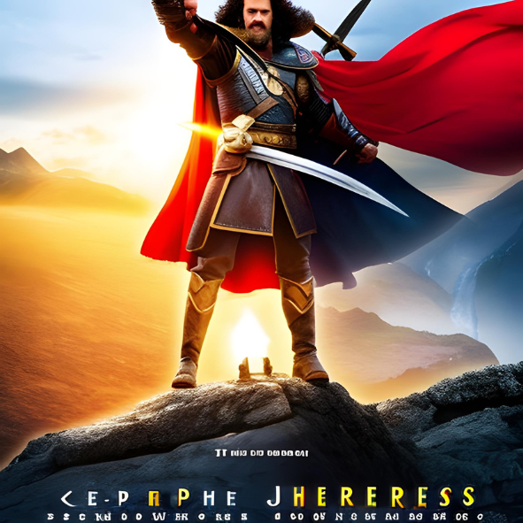
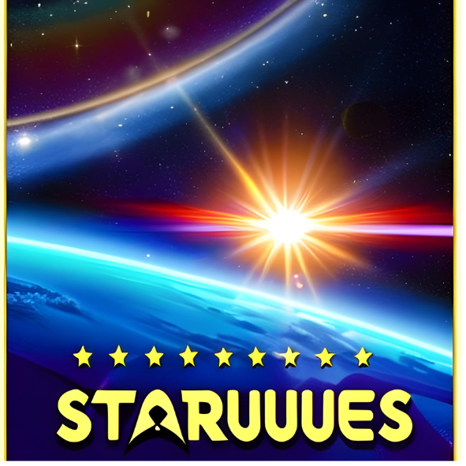
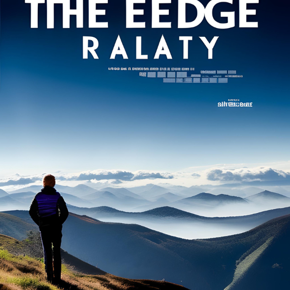
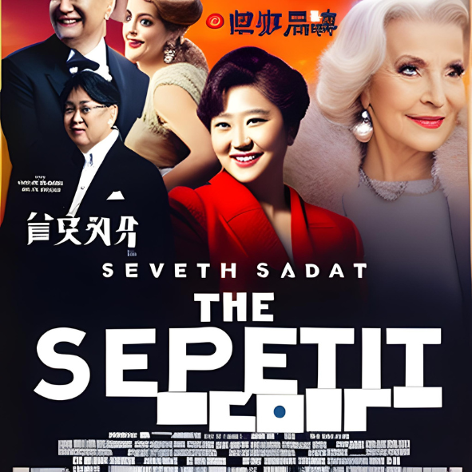

A Jornada Épica dos Heróis

A Jornada dos Heróis", o tão aguardado filme fictício, é uma odisseia impressionante pelo mundo da imaginação que nos transporta para um universo repleto de magia, aventura e emoção. Dirigido com maestria por um talentoso cineasta, o longa-metragem cativa o público desde os primeiros minutos e o leva a uma jornada épica, repleta de reviravoltas e surpresas emocionantes.
Aventura nas Estrelas

Aventura nas Estrelas" é um filme que nos leva a uma jornada intergaláctica emocionante e repleta de maravilhas além da nossa imaginação. Dirigido com maestria, o filme cativa desde o primeiro momento com seus efeitos visuais impressionantes, atuações brilhantes e um enredo envolvente que nos transporta para um universo vasto e cheio de mistérios.
A trama nos apresenta um grupo diversificado de personagens que embarcam em uma missão épica para explorar novos mundos, enfrentar desafios inimagináveis e desvendar segredos cósmicos. Cada personagem é cuidadosamente desenvolvido, com suas próprias motivações e conflitos internos, o que os torna cativantes e facilmente identificáveis para o público.
No Limite da Realidade

No Limite da Realidade" é uma obra cinematográfica que desafia os limites da imaginação, transportando o espectador para um mundo fantástico e misterioso. Dirigido com maestria, o filme nos leva a uma viagem inesquecível, explorando temas complexos e surpreendentes que mantêm o público intrigado do início ao fim.
No Palco da Sétima Arte

"No Palco da Sétima Arte" é um filme encantador que nos convida a entrar nos bastidores da sétima arte e mergulhar em um mundo de imaginação e criatividade. Dirigido com maestria, o filme nos presenteia com uma história envolvente que nos leva a conhecer os desafios e as paixões que permeiam a indústria cinematográfica.